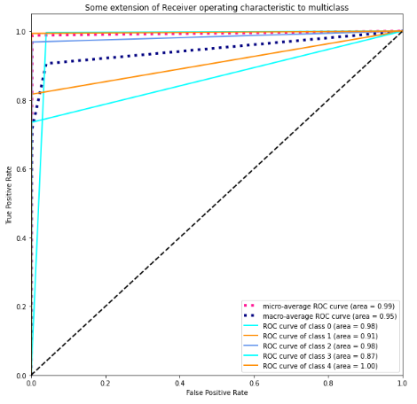
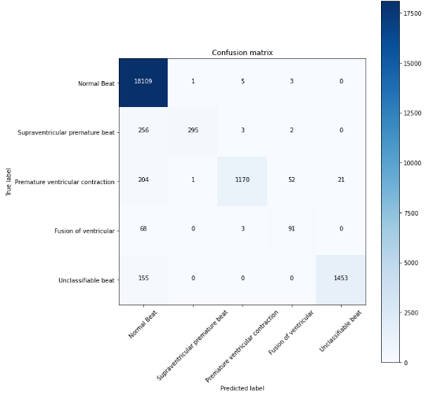
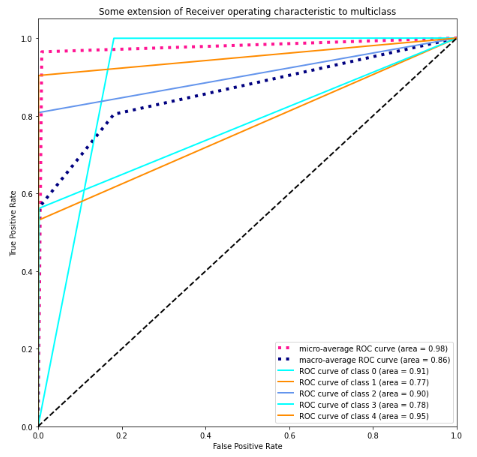

Benchmarking results
Comparison of model performance on the disease dataset (10,407 samples)
| Model | Precision weighted avg (%) | Recall weighted avg (%) | F1-score weighted avg (%) | Accuracy(%) | AUC(%) |
|---|---|---|---|---|---|
| Cnn-Lstm | 96 | 94 | 95 | 93.92 | 96 |
| Cnn | 97 | 97 | 97 | 96.68 | 98 |
| Simple Rnn | 96 | 95 | 96 | 95.35 | 97 |
| Deep Neural Network | 96 | 93 | 94 | 93.39 | 96 |
| LSTM | 97 | 97 | 97 | 96.87 | 98 |
| Attention | 98 | 97 | 97 | 97.37 | 98 |
| Residual | 97 | 95 | 96 | 95.27 | 97 |
| Seq_Seq_DL | 98 | 98 | 98 | 98.04 | 98 |
| IMLE-Net | 98 | 98 | 98 | 97.79 | 97 |
| Cardiologist-level arrhythmia | 98 | 98 | 98 | 98.42 | 99 |
| Automatic ECG | 99 | 99 | 99 | 98.8 | 99 |
| Attention Map | 98 | 98 | 98 | 97.9 | 99 |
Cnn-Lstm Results
Classification Report
precision recall f1-score support
Normal Beat 0.99 0.94 0.96 18118
Supraventricular premature beat 0.49 0.83 0.62 556
Premature ventricular contraction 0.79 0.96 0.86 1448
Fusion of ventricular 0.36 0.86 0.51 162
Unclassifiable beat 0.93 0.98 0.96 1608
accuracy 0.94 21892
macro avg 0.71 0.92 0.78 21892
weighted avg 0.96 0.94 0.95 21892
Confusion matrix
Roc Curve
Cnn Results
Classification Report
precision recall f1-score support
Normal Beat 0.99 0.97 0.98 18118
Supraventricular premature beat 0.59 0.84 0.70 556
Premature ventricular contraction 0.91 0.97 0.94 1448
Fusion of ventricular 0.55 0.86 0.67 162
Unclassifiable beat 0.98 0.99 0.98 1608
accuracy 0.97 21892
macro avg 0.80 0.93 0.85 21892
weighted avg 0.97 0.97 0.97 21892
Confusion matrix
Roc Curve
Simple Rnn Results
Classification Report
precision recall f1-score support
Normal Beat 0.99 0.96 0.97 18118
Supraventricular premature beat 0.61 0.81 0.69 556
Premature ventricular contraction 0.83 0.96 0.89 1448
Fusion of ventricular 0.36 0.84 0.50 162
Unclassifiable beat 0.97 0.97 0.97 1608
accuracy 0.95 21892
macro avg 0.75 0.91 0.81 21892
weighted avg 0.96 0.95 0.96 21892
Confusion matrix
Roc Curve
Deep Neural Network Results
Classification Report
precision recall f1-score support
Normal Beat 0.99 0.93 0.96 18118
Supraventricular premature beat 0.36 0.84 0.50 556
Premature ventricular contraction 0.87 0.95 0.91 1448
Fusion of ventricular 0.40 0.86 0.54 162
Unclassifiable beat 0.96 0.98 0.97 1608
accuracy 0.93 21892
macro avg 0.72 0.91 0.78 21892
weighted avg 0.96 0.93 0.94 21892
Confusion matrix
Confusion matrix
LSTM Results
Classification Report
precision recall f1-score support
Normal Beat 0.99 0.97 0.98 18118
Supraventricular premature beat 0.63 0.84 0.72 556
Premature ventricular contraction 0.91 0.95 0.93 1448
Fusion of ventricular 0.59 0.88 0.70 162
Unclassifiable beat 0.97 0.99 0.98 1608
accuracy 0.97 21892
macro avg 0.82 0.93 0.86 21892
weighted avg 0.97 0.97 0.97 21892
Confusion matrix
Roc Curve
Attention Results
Classification Report
precision recall f1-score support
Normal Beat 0.99 0.98 0.99 18118
Supraventricular premature beat 0.69 0.82 0.75 556
Premature ventricular contraction 0.91 0.95 0.93 1448
Fusion of ventricular 0.74 0.81 0.78 162
Unclassifiable beat 0.98 0.99 0.98 1608
accuracy 0.97 21892
macro avg 0.86 0.91 0.88 21892
weighted avg 0.98 0.97 0.97 21892
Confusion matrix
Roc Curve
Residual Results
Classification Report
precision recall f1-score support
Normal Beat 1.00 0.95 0.97 18118
Supraventricular premature beat 0.53 0.88 0.66 556
Premature ventricular contraction 0.84 0.97 0.90 1448
Fusion of ventricular 0.42 0.86 0.57 162
Unclassifiable beat 0.95 0.99 0.97 1608
accuracy 0.95 21892
macro avg 0.75 0.93 0.82 21892
weighted avg 0.97 0.95 0.96 21892
Confusion matrix
Roc Curve
Seq_Seq_DL Results
Classification Report
precision recall f1-score support
Normal Beat 0.99 0.99 0.99 18118
Supraventricular premature beat 0.82 0.79 0.80 556
Premature ventricular contraction 0.94 0.95 0.95 1448
Fusion of ventricular 0.81 0.73 0.77 162
Unclassifiable beat 0.99 0.97 0.98 1608
accuracy 0.98 21892
macro avg 0.91 0.89 0.90 21892
weighted avg 0.98 0.98 0.98 21892
Confusion matrix
Roc Curve
IMLE-Net Results
Classification Report
precision recall f1-score support
Normal Beat 0.98 1.00 0.99 18118
Supraventricular premature beat 0.94 0.66 0.77 556
Premature ventricular contraction 0.99 0.89 0.94 1448
Fusion of ventricular 0.86 0.72 0.79 162
Unclassifiable beat 1.00 0.96 0.98 1608
accuracy 0.98 21892
macro avg 0.95 0.84 0.89 21892
weighted avg 0.98 0.98 0.98 21892
Confusion matrix
Roc Curve

Cardiologist-level arrhythmia Results
Classification Report
precision recall f1-score support
Normal Beat 0.99 0.99 0.99 18118
Supraventricular premature beat 0.86 0.80 0.83 556
Premature ventricular contraction 0.96 0.96 0.96 1448
Fusion of ventricular 0.87 0.68 0.76 162
Unclassifiable beat 0.99 0.99 0.99 1608
accuracy 0.98 21892
macro avg 0.93 0.88 0.91 21892
weighted avg 0.98 0.98 0.98 21892
Confusion matrix
Roc Curve
Automatic ECG Results
Classification Report
precision recall f1-score support
Normal Beat 0.99 1.00 0.99 18118
Supraventricular premature beat 0.95 0.80 0.87 556
Premature ventricular contraction 0.96 0.97 0.97 1448
Fusion of ventricular 0.84 0.84 0.84 162
Unclassifiable beat 1.00 0.99 0.99 1608
accuracy 0.99 21892
macro avg 0.95 0.92 0.93 21892
weighted avg 0.99 0.99 0.99 21892
Confusion matrix
Roc Curve

Attention Map Results
Classification Report
precision recall f1-score support
Normal Beat 0.98 1.00 0.99 18118
Supraventricular premature beat 0.99 0.60 0.74 556
Premature ventricular contraction 0.96 0.94 0.95 1448
Fusion of ventricular 0.93 0.50 0.65 162
Unclassifiable beat 0.99 0.98 0.99 1608
accuracy 0.98 21892
macro avg 0.97 0.80 0.86 21892
weighted avg 0.98 0.98 0.98 21892
Confusion matrix

Roc Curve
